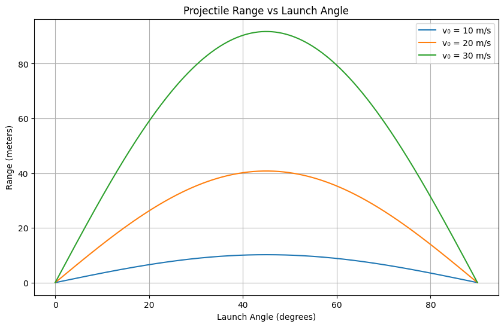

Absolutely! Let’s now expand the formulas and proceed with the Python implementation to generate and visualize the graphs. I’ll keep everything in English from here on.
📘 Extended Theoretical Foundation (Formulas)
1. Horizontal Launch (θ = 0°)
If the projectile is launched horizontally from a height \( h \):
- Time of flight: [ T = \sqrt{\frac{2h}{g}} ]
- Range: [ R = v_0 \cdot T = v_0 \cdot \sqrt{\frac{2h}{g}} ]
2. Oblique Launch from Ground (θ ≠ 0°)
- Time of flight: [ T = \frac{2 v_0 \sin\theta}{g} ]
- Maximum height: [ H = \frac{(v_0 \sin\theta)^2}{2g} ]
- Range: [ R = \frac{v_0^2 \sin(2\theta)}{g} ]
3. Launch from a Height \( h \)
When the projectile is launched from a height above the ground:
- Time of flight (solving a quadratic equation): [ T = \frac{v_0 \sin\theta}{g} + \sqrt{ \left(\frac{v_0 \sin\theta}{g}\right)^2 + \frac{2h}{g} } ]
- Range: [ R = v_0 \cos\theta \cdot T ]
💻 Python Code with Range Graphs
This script simulates range vs angle for different initial velocities and also allows for launching from a height:
import numpy as np
import matplotlib.pyplot as plt
def range_with_height(v0, theta_deg, h=0, g=9.81):
theta = np.radians(theta_deg)
v0x = v0 * np.cos(theta)
v0y = v0 * np.sin(theta)
# Time of flight formula with height
t_flight = (v0y / g) + np.sqrt((v0y / g)**2 + (2 * h / g))
R = v0x * t_flight
return R
# Parameters
angles = np.linspace(0, 90, 500)
v0_values = [10, 20, 30] # m/s
h = 10 # Launch height in meters
plt.figure(figsize=(10, 6))
for v0 in v0_values:
ranges = [range_with_height(v0, angle, h=h) for angle in angles]
plt.plot(angles, ranges, label=f'v₀ = {v0} m/s, h = {h} m')
plt.title('Projectile Range vs Launch Angle (with Launch Height)')
plt.xlabel('Launch Angle (degrees)')
plt.ylabel('Range (meters)')
plt.legend()
plt.grid(True)
plt.show()

🔍 Observations
- The maximum range is no longer strictly at 45° if launched from a height.
- The higher the launch point, the more range increases for lower angles.
- The symmetric nature of the trajectory (like 30° vs 60°) is broken when height is involved.
Would you like me to extend this further by adding:
- 3D surface plot for \( R(\theta, v_0) \)?
- Air resistance model?
- GUI version (e.g., using streamlit or pygame)?